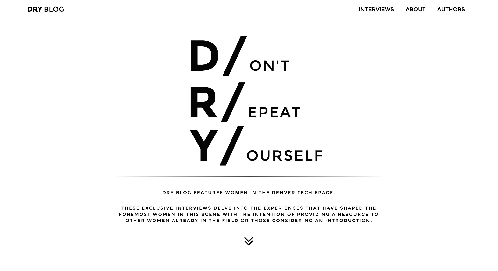
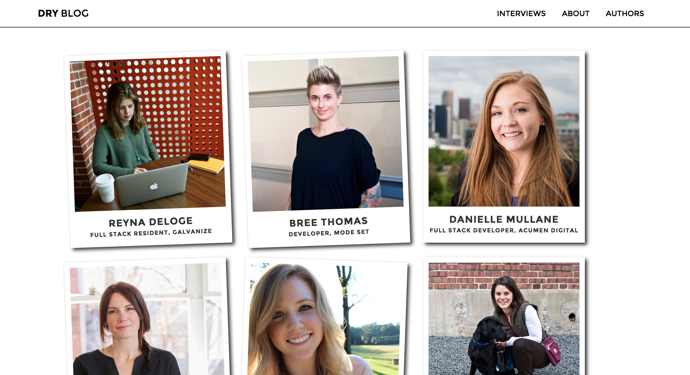

An East Coast native, I moved to Colorado several years ago to pursue an adventurous lifestyle. Exploring various career options since my arrival, I stumbled upon coding and immediately desired to become immersed. I was welcomed into the world of tech by Galvanize, a place where I also solidified my skills. As a continue to advance my abilities, this
An East Coast native, I moved to Colorado several years ago to pursue an adventurous lifestyle. Exploring various career options since my arrival, I stumbled upon coding and immediately desired to become immersed. I was welcomed into the world of tech by Galvanize, a place where I also solidified my skills. As a continue to advance my abilities, this DRY Blog
Javascript AngularJS CSS HTML Node/Express MongoDBAn original blog platform co-created with Zoë Adelman, this site features unqiue advice from women in the Denver tech scene. Content is created from exclusive interviews with these incredibly successful and inspirational women. The purpose of this blog is to serve as a resource for other women in the tech space or those interested in learning more about the stories of the women leading the way.
DRY Blog Images
Included here are screenshots from the site. Site launch scheduled for October 30, 2015
Landing page
Home page content
Individual interview page